Gita breve ma intensa: la val Raccolana non delude mai.
Reduce dopo tre giorni in tenda lungo la Grande Traversata Elbana, con lo zaino leggero appena partiti mi sembrava di volare!
Difficile restare indifferenti dinnanzi agli erti pendii che sorreggono la Via Alta di Raccolana. Dal fondovalle non posso non «sognare» sugli altissimi Mucul, Cimòn, Fossâl...
Di là il Pic di Babe recentemente visitato: davvero un bel posto. Non vedo l'ora di fare la traversata Goriude-Blasìc!
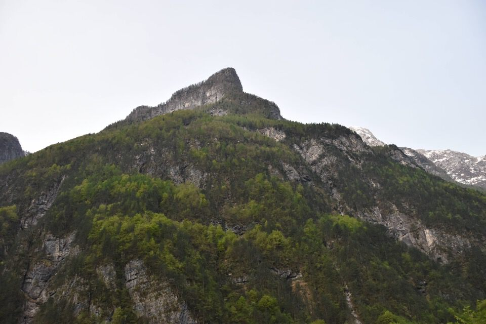
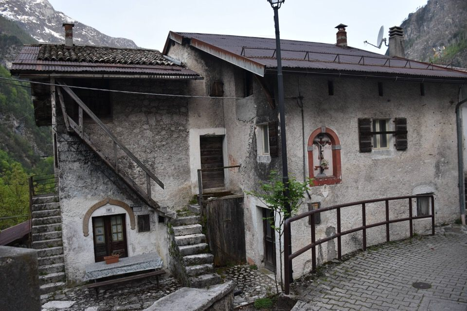
Verso Goriude.
Quel giorno non so cosa avessimo, saremo stati noi addormentati ma non ci abbiamo azzeccato nulla: mancato l'attacco del troi, e poi perso di continuo!
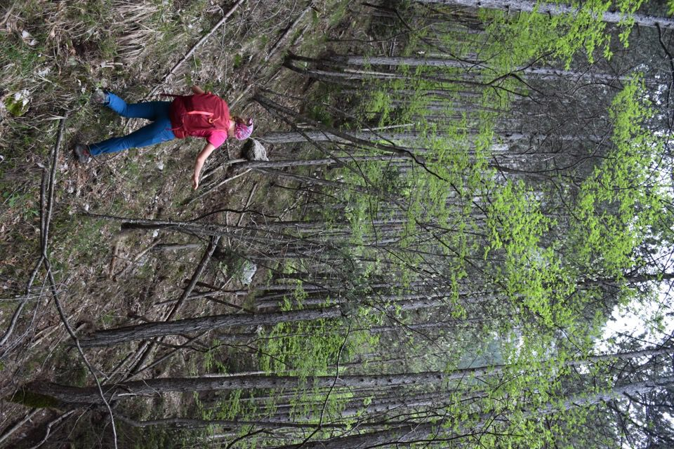
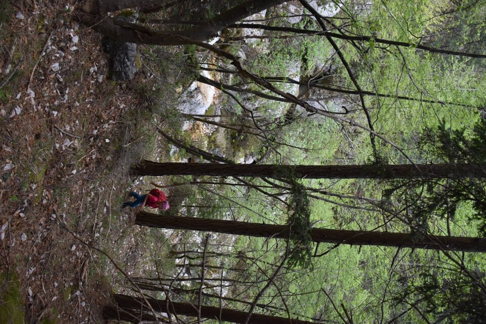
Di nuovo il Pic di Babe.
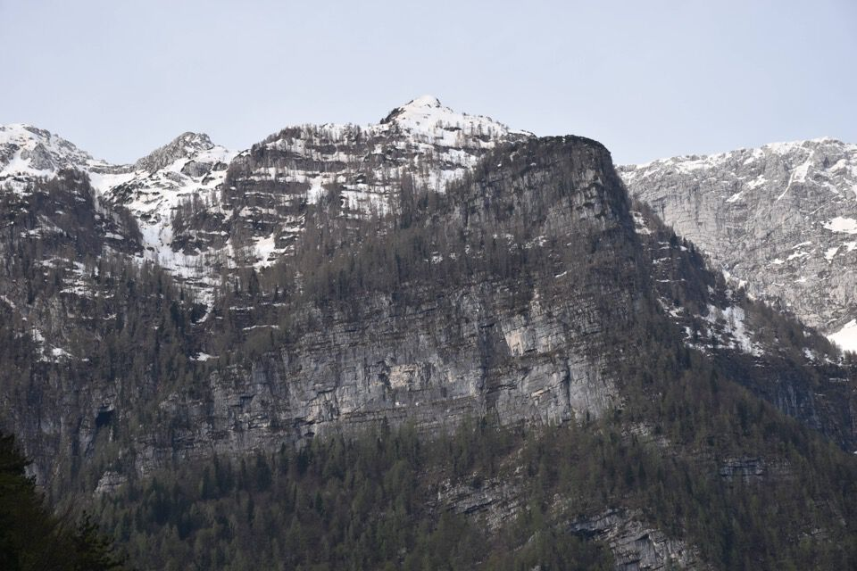
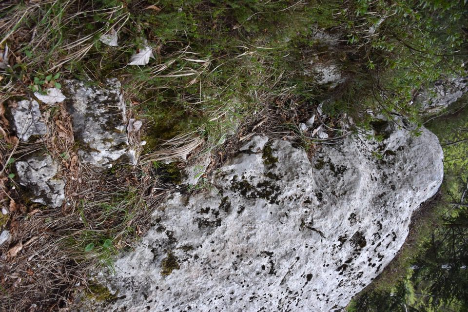

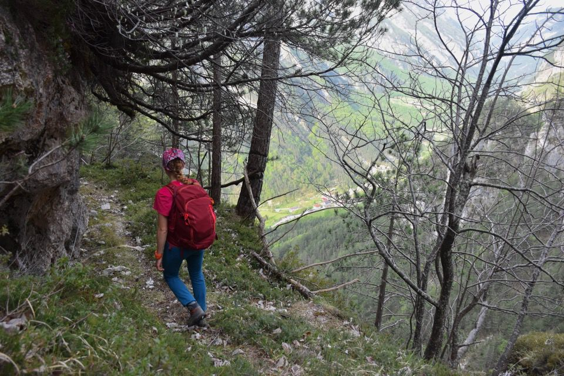
Nel punto dell'arco, passaggio peraltro pittoresto benché ardito, ci becchiamo una scarica di sassi dall'alto, cosa che ci fa gelare il sangue! L'umore iniza a calare...
...e non migliora nel punto della frana, alla testata del rio de la Calada.
Il passaggio è oggettivamente rischioso e lo rifarei poco volentieri.
Montiamo sulla pala successiva e siamo fuori dai guai: troviamo resti di uno stavolo, su un dosso panoramico.
Non credo che servano descrizioni...
Lì in mezzo da qualche parte la strade dai cjarnei riscoperta da J. Martina (collegamento Goriude - Pic di Babe).
Mi rifiuto di salire sulla quota indicata come Cuelát: il poter dire di aver fatto una cima mi disgusta.
Certo che fa strano uscire da un percorso del genere e trovarsi a camminare sull'asfalto...
In foto il Cimòn con la polvere del Sahara in cima (sic!).
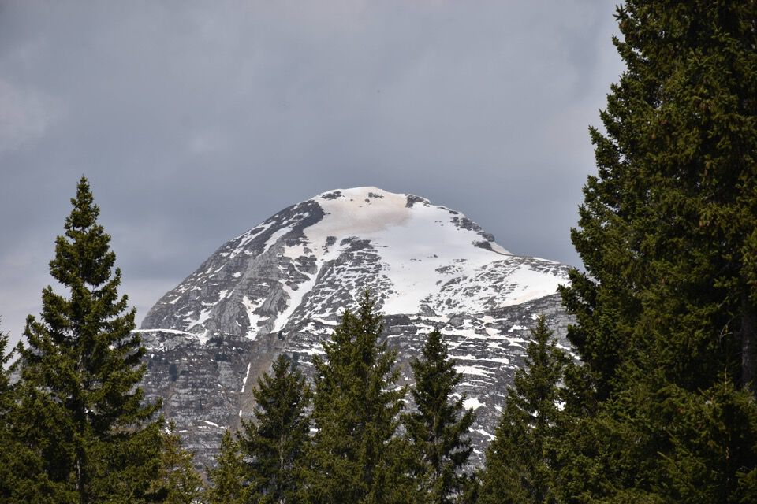
L'altopiano del Montasio è sempre una meraviglia.
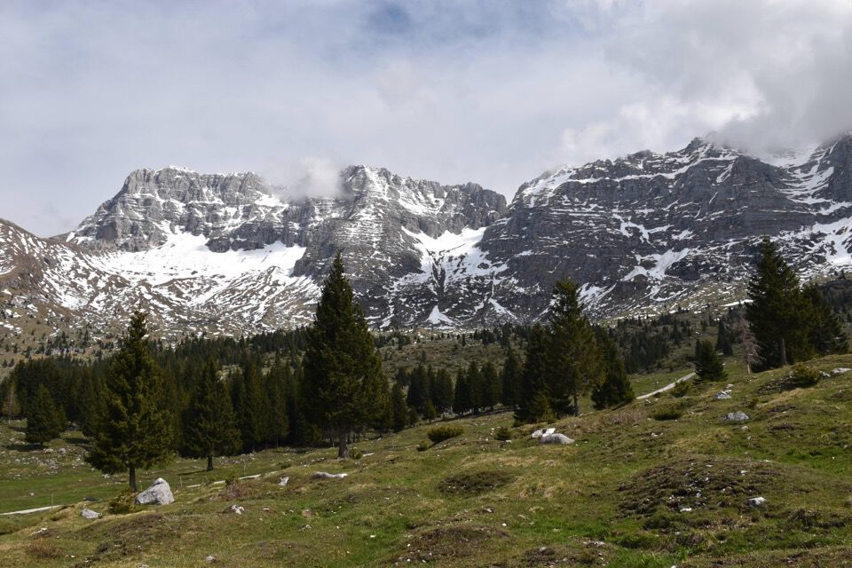
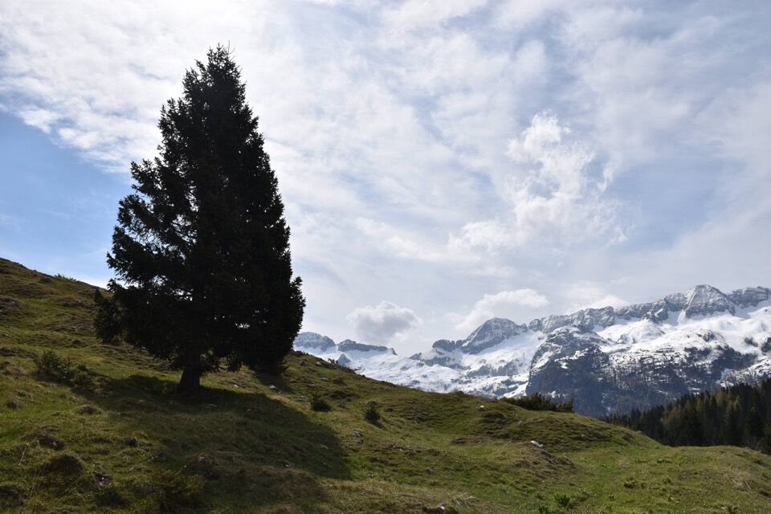
Laggiù il Piròn del Larice, su cui siamo saliti due anni fa per percorrere il vallone del Buinç e il sentiero Ceria-Merlone. Che giornata magnifica quella volta!
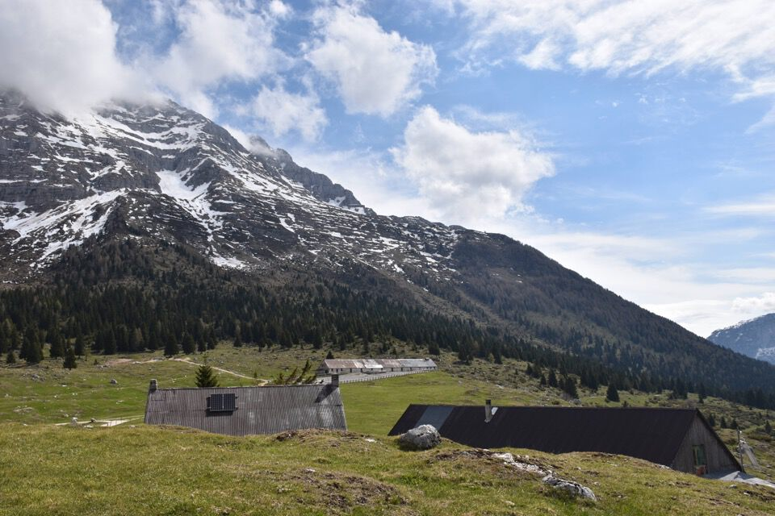
Foto ricordo di una splendida giornata: stupide previsioni meteo.
Ho fatto un'infinità di foto questa volta, e questa è solo una piccola selezione; d'altronde di cose che mi interessano qui attorno ce ne sono a volontà.
In foto la Costa di Sart.
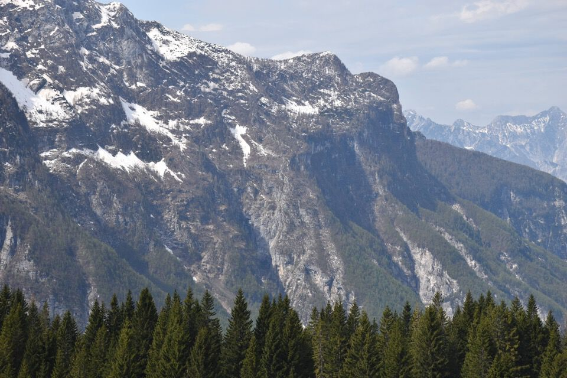
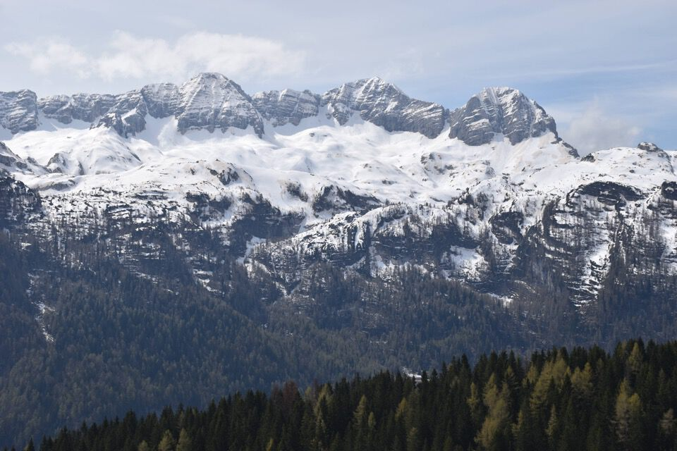
Scendiamo per il bel sentiero CAI 622: che vista sul Sart col remoto Calderino Robel.
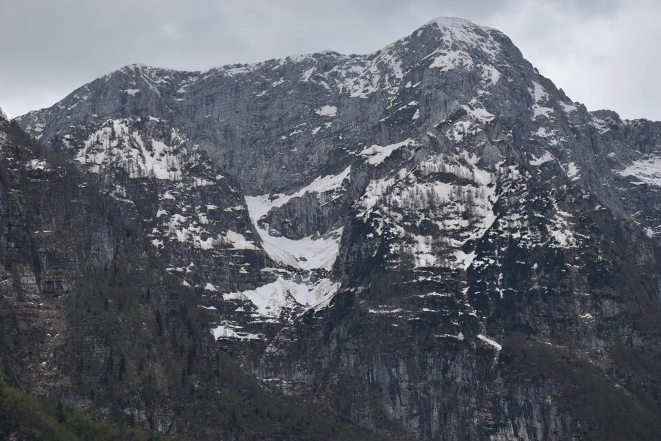
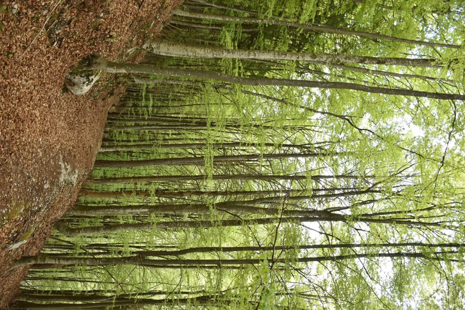
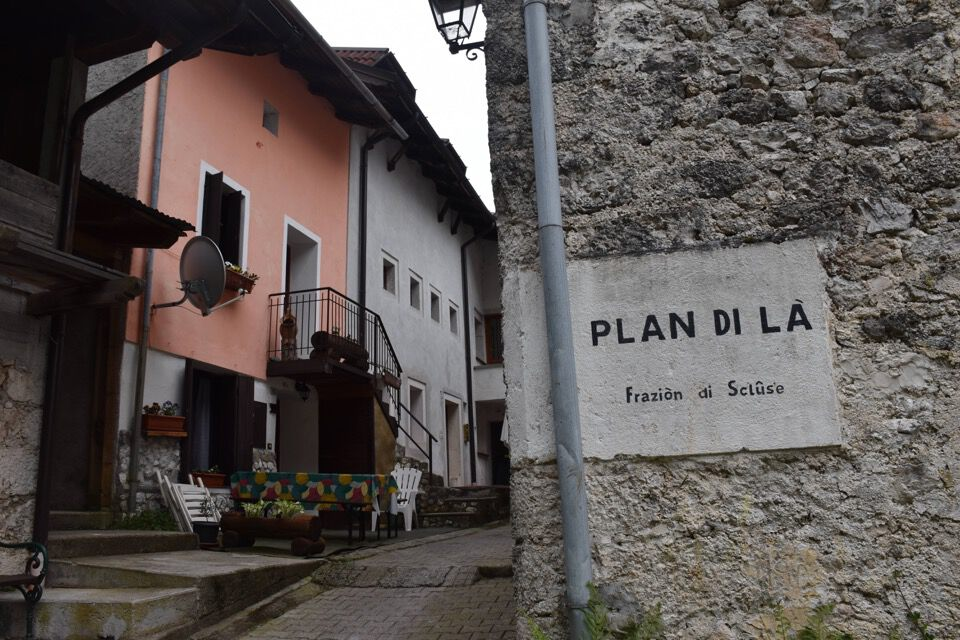